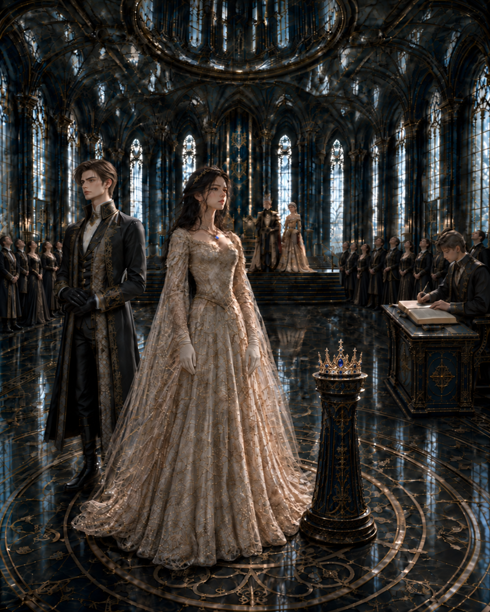
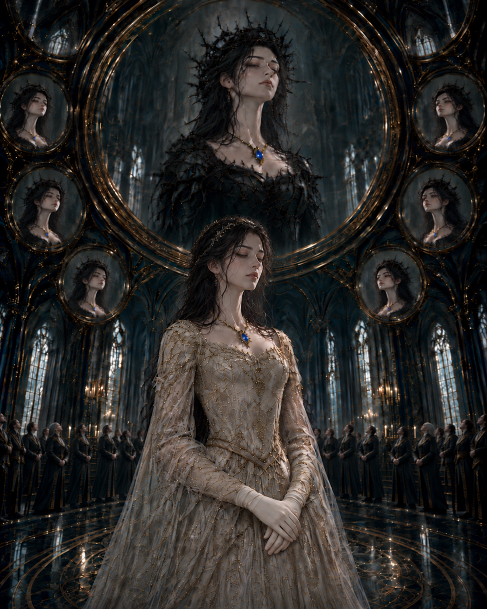

왕국의 모든 거울은 당신이 무엇을 했는지 기억한다. 어느 거울도 그 이유는 기억하지 않는다.
대전의 모두가 그녀의 무릎을 기다리고 있었다.
높은 창틈으로 스며든 가을 끝의 바람이, 대전 안에 남아 있던 마지막 온기마저 훑어갔다.
왕관은 아이리스의 눈높이에 놓여 있었다.
은 받침대 위에, 아직 누구의 손도 닿지 않은 채.
그 왕관을 쓰기 위해 그녀가 해야 할 일은 단 하나였다.
무릎을 꿇는 것.
그녀의 정혼자 커런 노윅은 그녀의 왼쪽 뒤편에 조금 물러서 서 있었다. 검은 장갑을 낀 두 손은 단정히 맞잡혀 있었고, 얼굴에는 오래 익힌 예의의 흔적만이 희미하게 남아 있었다.
그의 낯빛은 창백할 만큼 고요했다.
아이리스는 알고 있었다. 커런은 그녀의 비명조차 아름다운 노랫소리로 기록할 수만 있다면, 기꺼이 그녀의 목을 조를 사람이었다.
그가 말하는 안전이란, 박제된 나비가 핀에 꽂힌 채 유리 상자 안에서 누리는 영원과 같았다.
그는 나비를 죽이려는 사람이 아니었다.
오히려 날개 하나 다치지 않게 보존하는 일을 사랑이라고 믿는 사람이었다.
아버지는 옥좌에서 몸을 조금 앞으로 기울이고 있었다.
어머니는 이번만큼은 손에 아무 서류도 들고 있지 않았다. 무엇을 붙잡아야 할지 모르는 듯, 텅 빈 손가락 끝이 희미하게 떨렸다.
대신들의 줄은 대전 끝까지 이어져 있었다.
뒤쪽에 선 사람들은 아이리스의 얼굴이 아니라 천장의 거울을 올려다보고 있었다.

거울이 먼저 알려줄 것이었다.
왕관을 받기 위해 무릎 꿇은 공주의 얼굴이 얼마나 아름답게 빛나는지를.
아이리스는 무릎을 꿇지 않았다.
“저는.”
그 한마디에 대전이 완전히 멈췄다.
“이 이름으로 더는 살지 않겠습니다.”
아무도 움직이지 않았다.
커런의 미소가 처음으로 아주 조금 무너졌다.
그리고 바로 그 침묵 속에서 왕관에 실금이 갔다.
지직.
아주 오래된 짐승의 척추가 부러지는 듯한, 불길한 파열음이었다. 가느다란 균열 하나가 왕관의 표면을 조용히 가로질렀다.
동시에 천장의 거울들이 일제히 숨을 죽이듯 어두워졌다.
다시 밝아졌을 때, 그 안에는 분명 아이리스의 얼굴이 있었다.
그러나 아이리스가 알고 있던 자신의 얼굴과는 달리 낯설었다.
거울은 그녀의 이목구비를 흉측하게 일그러뜨리지 않았다.
오히려 지나치게 완벽했다.
흠잡을 데 없이 아름답고, 한 치의 흐트러짐도 없는 얼굴. 오래도록 다듬어진 조각상처럼 매끄러웠다.
다만 그 얼굴에는 공주로서 익혀온 다정함도, 사람에게 남아 있어야 할 온기도 없었다. 눈동자에는 아무런 감정도 비치지 않았다.
거울 속 아이리스는 대전 안의 사람들을 바라보고 있었다.
사람을 보는 눈이라기보다, 이미 판정이 끝난 무언가를 내려다보는 눈이었다.
무엇보다 이질적인 것은 그녀의 머리 위였다.
왕관이 놓였어야 할 자리에 검은 그림자가 가느다랗게 얽혀 있었다.
그것들은 가지처럼 뻗고 서로를 휘감으며, 마침내 하나의 가시관을 이루었다.
우아했고, 잔혹했다.
검은 가시는 그녀의 이마 가까이 내려앉아 마치 처음부터 그 자리가 자신의 것이었던 것처럼 자리하고 있었다.
아이리스가 선택한 적 없는 왕관이었다.
왕국이 그녀에게 새로 씌운 이름의 형상이었다.

흠잡을 데 없이 아름다운 얼굴을 한 채, 온몸으로 인간이 아닌 무엇임을 발산하는 기묘한 위압감.
대전 뒤편 어딘가에서 낮고 짧은 숨소리가 들렸다.
한 여자가 나직이 말했다. 오래전부터 아이리스를 그렇게 불러온 듯, 망설임 없는 목소리였다.
“마녀.”
대전 오른편에 서 있던 기록관리부 수장이 장부를 펼쳤다.
반듯이 빗어 넘긴 백발 아래, 깊은 주름에 둘러싸인 눈은 여전히 아이리스에게 머물러 있었다.
이윽고 그의 펜촉이 종이에 닿는 소리만이 대전에 남았다.
한 줄이 지워지고 있었다.
스물아홉 해 동안 이 왕국이 알아온 이름 하나가 다른 무언가로 다시 쓰이고 있었다.
기록관리부 수장은 고개를 들지 않았다.
그녀가 왜 그런 말을 했는지는 기록되지 않을 것이었다.
그에게 필요한 것은 오직 그 말이 왕국의 질서 안에서 어떤 이름으로 분류되어야 하는가뿐이었다.
반역.
계승 거부.
왕실 기록 훼손.
아직 판정이 내려지지 않았기에 어느 단어도 확정된 것은 아니었다. 그러나 그의 손은 이미 그중 하나를 향해 움직이고 있었다.
아이리스는 장부보다 어머니의 손을 보고 있었다.
세라핀의 손가락이 허공에서 한 번 오므라들었다.
마치 딸에게 손을 뻗으려다, 자신이 왕비라는 사실을 기억한 것처럼.
“아이리스.”
어머니가 그녀의 이름을 불렀다.
딸을 부르는 목소리인지, 공주에게 마지막 기회를 주는 목소리인지 아이리스는 알 수 없었다.
어쩌면 세라핀 자신도 알지 못했을 것이다.
에드먼드 왕이 천천히 옥좌에서 일어났다.
“네가 무슨 말을 하고 있는지 알고 있느냐.”
아이리스는 아버지를 바라보았다.
그의 얼굴에는 분노보다 두려움이 먼저 떠올라 있었다.
그 사실이 아이리스를 이상하게 안심시켰다. 적어도 이 순간만큼은 그도 왕이기 전에 한 사람처럼 보였다.
“알고 있습니다.”
“그 이름이 무엇을 지키는지도 알고 있느냐.”
아이리스의 시선이 다시 왕관으로 돌아갔다.
받침대 위의 왕관에는 어느새 균열이 더 길게 번져 있었다. 가장 높은 끝에서 시작된 가느다란 선이 안쪽으로 천천히 파고들고 있었다.
마치 왕관이 깨지고 있는 것이 아니라, 그 안에 오랫동안 숨겨져 있던 억압의 실체가 밖으로 기어 나오려는 것처럼 보였다.
아이리스는 오랫동안 그 이름들이 자신을 지켜준다고 믿었다.
애시워스.
공주.
왕국의 계승자.
그 이름들 덕분에 그녀는 굶지 않았고, 추위에 떨지 않았으며, 누구도 함부로 손댈 수 없었다. 그녀의 말은 기록되었고, 때로는 침묵조차 의미를 부여받았다.
다만 그 이름들 안에서 그녀가 무엇을 원하는지는 단 한 번도 질문받지 않았다.
그리고 오늘부터는 그 보호의 대가로, 자신의 이름을 지킬 권리까지 내놓아야 했다.
“네가 지금 거부하는 것은 왕관 하나가 아니다.”
아버지가 말했다.
“네 가족과 백성, 두 가문의 결속, 그리고 그 이름이 지켜온 모든 것을 거부하는 일이다.”
보호.
아이리스는 그 말을 들을 때마다 언제나 같은 것을 떠올렸다.
창문이 없는 방.
밖에서 잠긴 문.
안에 있는 사람을 해칠 수 있는 것은 아무것도 없지만, 그 사람 역시 어디에도 갈 수 없는 곳.
커런이 마침내 입을 열었다.
“폐하.”
그의 시선은 왕을 향해 있었지만, 이어진 말은 아이리스에게 닿았다.
“의식이 길어져 잠시 판단이 흐려지신 겁니다.”
커런은 한 걸음 다가왔다.
그의 목소리에는 동요가 없었다.
마치 아이리스가 무엇을 말하든, 그녀에게 가장 좋은 것이 무엇인지는 자신이 더 정확히 알고 있다는 듯한 목소리였다.
그녀의 거부는 결심이 아니라 일시적인 혼란이었다. 누구나 원하는 안전과 권력, 보호를 아이리스만 원하지 않을 수 있다는 가능성은 그의 판단 안에 존재하지 않았다.
“잠시 멈추고 다시 생각하시면—”
“저는 혼란스럽지 않습니다.”
아이리스가 말했다.
커런의 얼굴에는 상처와 모욕이 거의 같은 표정으로 떠올랐다.
커런이 자신을 사랑하지 않는다고 생각한 적은 없었다.
그는 언제나 그녀를 가장 안전한 자리에 두고 싶어 했다. 그가 알고 있는 가장 훌륭한 삶, 가장 많은 것을 지킬 수 있는 삶을 그녀에게 주려 했다.
그러나 그가 말하는 안전에는 언제나 한 가지 조건이 붙어 있었다.
그 자리가 안전하다고 판단하는 사람은 아이리스가 아니라 커런 자신이어야 한다는 것.
아이리스의 거부는 그에게 사랑의 거절만을 의미하지 않았다. 자신이 평생 옳고 가치 있다고 믿어온 삶 전체가 거부당하는 일이었다.
그가 안전하다고 믿는 자리에서 아이리스는 점점 사라지고 있었다.
천장의 거울 속 얼굴들이 다시 한번 일렁였다.
아이리스는 거울 속에 비친, 검은 가시관을 쓴 자신을 바라보았다.
그녀는 누구도 저주하지 않았다.
누구의 것도 빼앗지 않았다.
단지 무릎을 꿇지 않았을 뿐이었다.
그런데도 왕국은 이미 그녀의 진짜 얼굴보다 먼저, 그녀에게 씌우고 싶은 죄를 만들어내고 있었다.
“거울을 멈춰라.”
어머니가 말했다.
이번에는 왕비의 명령이었다.
아무도 움직이지 않았다.
거울은 누군가가 켜고 끄는 물건이 아니었다.
거울은 사람들의 판단을 받아 비출 뿐이었다.
그리고 지금 대전 안에 있는 사람들은 모두 같은 질문을 품고 있었다.
공주가 왕관을 거부한다면, 그녀는 무엇인가.
왕국은 빈칸을 견디지 못했다.
그래서 가장 오래된 답을 꺼냈다.
마녀.
그 단어가 다시 들렸다.
이번에는 조금 더 가까운 곳에서였다.
누가 말했는지 아이리스는 돌아보지 않았다.
처음 입을 연 사람이 누구인지는 중요하지 않았다.
그 말을 듣고도 아무도 부정하지 않았다는 사실이 중요했다.
기록관리부 수장의 손이 멈췄다.
“기록을 보존하겠습니다.”
그가 말했다.
“전하께서 하신 말씀과 거울에 비친 인영은 따로 남기겠습니다. 지금 보이는 그대로입니다.”
아이리스는 웃을 뻔했다.
지금 보이는 그대로.
얼굴은 분명 자신의 것이었다. 그러나 거울이 그 얼굴에 덧씌운 가시관과 의미까지 자신의 것은 아니었다.
그것은 아이리스의 현재가 아니라, 왕국이 이미 그녀에게 내려버린 판정에 가까웠다.
하지만 기록이 그것을 공식적인 모습으로 정하는 순간부터, 그 모습이 자신이 아니라고 증명해야 할 사람은 아이리스 한 명뿐이었다.
“그 인영은 기록하지 마라.”
에드먼드가 말했다.
기록관리부 수장이 처음으로 왕을 올려다보았다.
“폐하 아직 판정은 내려지지 않았습니다. 다만 계승식에서 드러난 인영을 기록에서 뺄 수는 없습니다. 판정란은 비워 두겠습니다.”
목소리는 공손했다. 그러나 그것은 명령을 거역하는 자의 태도가 아니라, 이미 정해진 절차를 왕에게 통보하는 관리의 태도였다.
펜촉이 종이 위를 사각이며 다시 움직였다.
왕은 더 말하지 않았다.
아이리스가 공주가 아니라면, 에드먼드는 어떤 왕이 되는가.
딸을 제대로 길러내지 못한 아버지.
불안정한 계승자를 만들어낸 군주.
왕국에서 가장 완벽해야 할 가정조차 하나의 이름 아래 유지하지 못한 사람.
아이리스는 아버지의 얼굴에서 두 종류의 두려움이 뒤섞이는 것을 보았다.
딸에게 닥칠 일을 두려워하는 마음.
그리고 딸로 인해 자신이 지켜온 모든 것이 흔들릴까 두려워하는 마음.
어느 쪽이 더 큰지는 알 수 없었다.
아마 그 자신도 알지 못할 것이다.
아이리스는 그 사실을 원망하고 싶었다.
그러나 이상하게도 그 순간, 자신이 평생 이 가족에게서 배운 것이 무엇인지 선명하게 이해했다.
사랑과 역할은 서로를 밀어내지 않았다.
두 가지는 언제나 같은 얼굴로 왔다.
그들은 딸을 사랑했기에 공주를 지키려 했고, 공주를 지키기 위해 딸의 목소리를 듣지 않았다.
쩌적.
왕관에 두 번째 금이 갔다.
이번에는 훨씬 더 크고 날카로운 소리가 났다.
두꺼운 얼음 아래 갇혀 있던 강물이 한꺼번에 길을 찾는 듯한 소리였다.
대전 뒤편에서 사람들이 움직이기 시작했다.
누군가는 문 쪽으로 물러섰고, 누군가는 더 잘 보기 위해 고개를 들었다.
마녀의 탄생을 두려워하면서도 그 순간을 놓치고 싶어 하지 않는 얼굴들이었다.
아이리스는 자신이 그들의 이야기 속에서 이미 다른 사람이 되어가고 있음을 느꼈다.
오늘 아침까지 그들은 그녀를 완벽한 공주라고 불렀다.
내일부터는 자신들이 오래전부터 그녀의 불안정함을 알아보았다고 말할 것이다.
그녀의 침착함은 냉혹함이 될 것이다.
영리함은 기만이 되고, 침묵의 순간들은 악의를 숨긴 증거가 될 것이다.
달라진 것은 그녀가 아니었다.
그녀를 설명하는 사람들의 입이었다.
사람들은 과거를 바꿀 필요가 없었다.
한때 미덕이라 불렀던 것을 죄의 징후라고 다시 부르면 되었다.
그러면 그들은 자신들이 처음부터 옳았다고 믿을 수 있었다.
“마지막으로 묻겠다.”
에드먼드가 말했다.
왕의 목소리였다.
아버지는 사라져 있었다.
“무릎을 꿇겠느냐.”
아이리스는 은 받침대 앞에 서 있었다.
무릎을 한 번 굽히기만 하면 모든 것이 돌아갈 수 있었다.
커런은 마침내 그녀가 제자리로 돌아왔다고 믿을 것이고, 어머니는 참았던 숨을 내쉴 것이다. 아버지는 오늘의 일을 왕실의 기록 안에서 설명 가능한 사건으로 바꾸어놓을 것이다.
같은 침묵은 품위가 되고, 거울 속의 끔찍한 가시관은 사라지며, 다시 아름다운 왕관이 그녀의 머리 위를 장식할 것이다.
아이리스는 그것이 얼마나 쉬운지 알고 있었다.
그녀는 평생 자신이 원하는 것을 묻지 않은 채, 정해진 일을 완벽하게 해왔다.
문장 하나가 문득 떠올랐다.
하나의 정직한 말. 하나의 선택. 한 번의 거절. 한 번의 허락.
“아니요.”
그녀가 말했다.
왕관이 깨졌다.